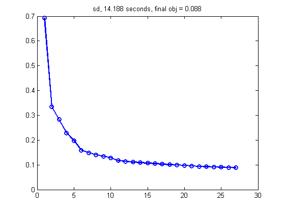
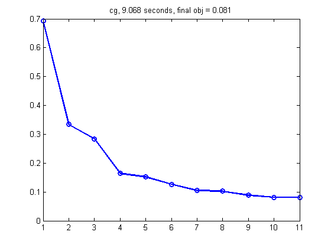
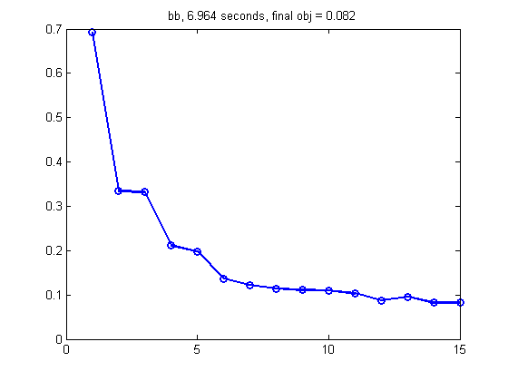

Compare various optimizers on a binary logistic regression problem
setSeed(0);
Ntrain = [];
[Xtrain, ytrain, Xtest, ytest] = mnistLoad([2 3], Ntrain);
ytrain = setSupport(ytrain, [-1 +1]);
ytest = setSupport(ytest, [-1 +1]);
[N,D] = size(Xtrain);
winit = zeros(D,1);
lambda = 1e-9;
funObj = @(w) penalizedL2(w, @(ww) LogisticLossSimple(ww, Xtrain, ytrain), lambda);
options = [];
options.derivativeCheck = 'off';
options.display = 'none';
options.maxIter = 100;
options.maxFunEvals = 100;
options.TolFun = 1e-3;
options.TolX = 1e-3;
methods = {'sd', 'cg', 'bb', 'lbfgs'};
for m=1:length(methods)
method = methods{m}
options.Method = method;
[w, finalObj, exitflag, output{m}] = minFunc(funObj, winit, options);
fvalTrace = output{m}.trace.fval;
tic
[model] = logregFit(Xtrain, ytrain, 'regtype', 'l2', 'lambda', lambda, ...
'fitOptions', options, 'preproc', []);
assert(approxeq(w, model.w))
t = toc;
figure;
plot(fvalTrace, 'o-', 'linewidth', 2);
title(sprintf('%s, %5.3f seconds, final obj = %5.3f', ...
method, t, finalObj));
printPmtkFigure(sprintf('logregOpt%s', method))
end
method =
sd
method =
cg
method =
bb
method =
lbfgs
  